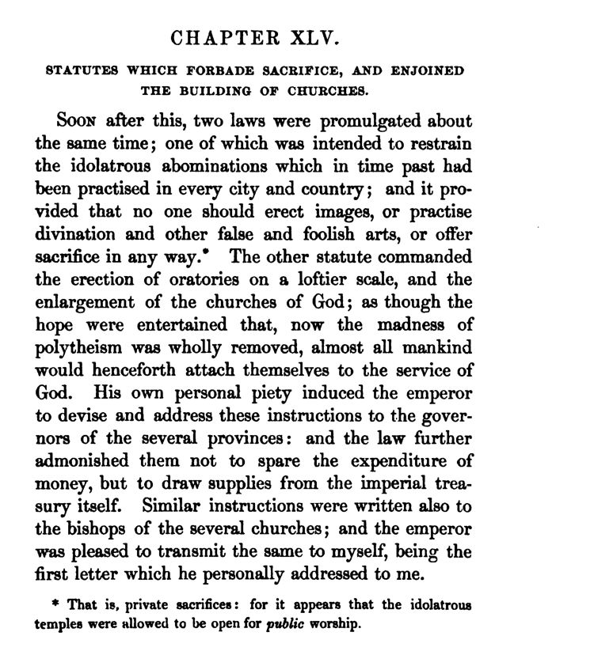

Governors forbidden to sacrifice; images, divination and sacrifice banned (II.44–45)
English: London 1845, book II, chs. XLIV–XLV, pp. 88–89, scans n112–n113.

Chapter XLIV. He promotes Christians to offices of government, and forbids Gentiles in such stations to offer sacrifice. After this the emperor continued to address himself to matters of high importance, and first he sent governors to the several provinces, mostly such as were devoted to the saving faith; and if any appeared inclined to adhere to Gentile worship, he forbade them to offer sacrifice. This law applied also to those who surpassed the provincial governors in rank and dignity, and even to those who occupied the highest station, and held the authority of the Prætorian Præfecture. If they were Christians, they were free to act consistently with their profession: if otherwise, the law required them to abstain from idolatrous sacrifices.
Chapter XLV. Statutes which forbade sacrifice, and enjoined the building of churches. Soon after this, two laws were promulgated about the same time; one of which was intended to restrain the idolatrous abominations which in time past had been practised in every city and country; and it provided that no one should erect images, or practise divination and other false and foolish arts, or offer sacrifice in any way.* The other statute commanded the erection of oratories on a loftier scale, and the enlargement of the churches of God …
* That is, private sacrifices: for it appears that the idolatrous temples were allowed to be open for public worship.
Lecky’s note 17 (governors) and note 18 (the prohibition) cite these chapters. His ch. I note 26, that Eusebius “classifies his prohibition of prophecy with the measures directed openly against paganism”, fits II.45, where divination is banned in the same law as sacrifice, better than the I.16 he cites.
“Every kind of sacrifice forbidden” (IV.23)
English: London 1845, book IV, ch. XXIII, pp. 192–193, scan n216 (OCR).
Chapter XXIII. He forbids idolatrous worship, but honours martyrs and their festivals. Such were his sacred ministrations in the service of his God. At the same time, his subjects, both civil and military, throughout the empire, found a barrier every where opposed against idol worship, and every kind of sacrifice forbidden. A statute was also passed, enjoining the due observance of the Lord’s day …
Temples stripped and statues paraded in Constantinople (III.54)
English: London 1845, book III, ch. LIV, p. 158, scan n182 (OCR).
Chapter LIV. The idol temples and images every where destroyed. … On the other hand he used every means to rebuke the superstitious errors of the heathen. Hence the entrances of their temples in the several cities were left exposed to the weather, being stripped of their doors at his command; the tiling of others was removed, and their roofs destroyed. From others again the venerable statues of brass, of which the superstition of antiquity had boasted for a long series of years, were exposed to view in all the public places of the imperial city: so that here a Pythian, there a Sminthian Apollo, excited the contempt of the beholder; while the Delphic tripods were deposited in the circus, and the Muses of Helicon …
Lecky’s ch. III note 75 (“Constantine himself set the example in this respect. See the admiring remarks of Eusebius, Vita Const. lib. iii. caps. 5, 6”) describes this chapter; in the standard numbering III.5–6 concern the Easter controversy and the summons to Nicaea, so “5, 6” is probably a slip for 54.
Backlinks
Every place in Rationalism in Europe that links to this page (generated automatically when the site is built).